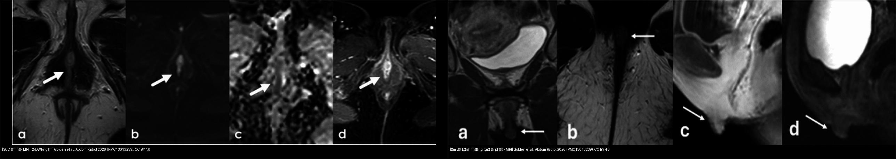
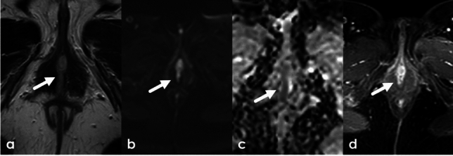
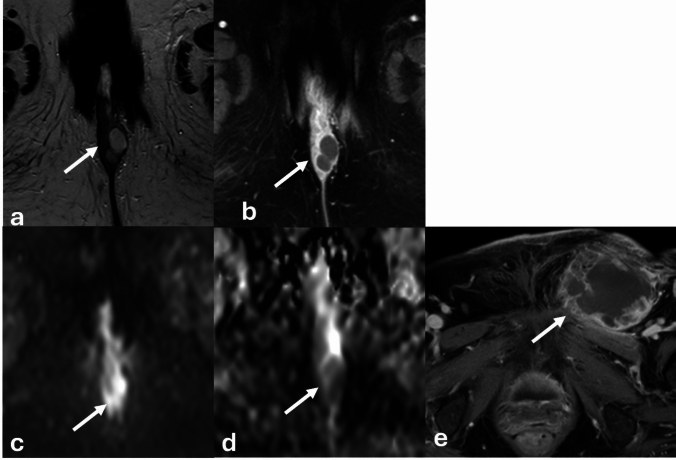
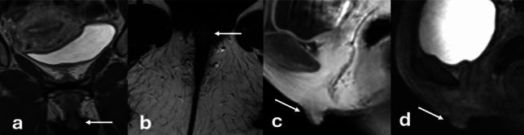
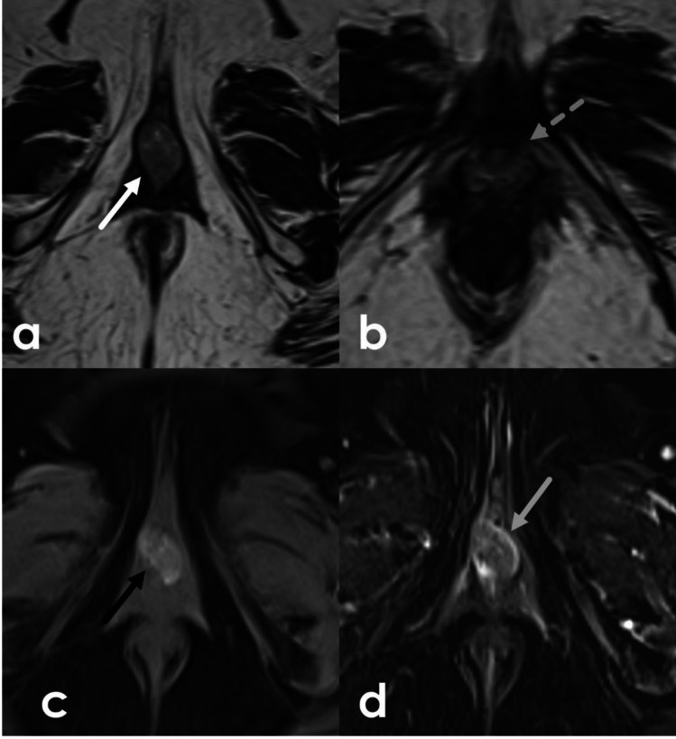
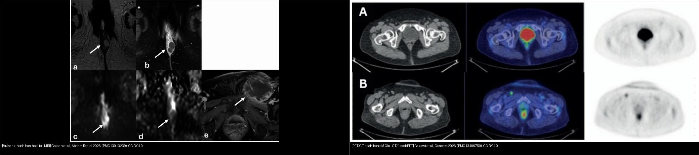
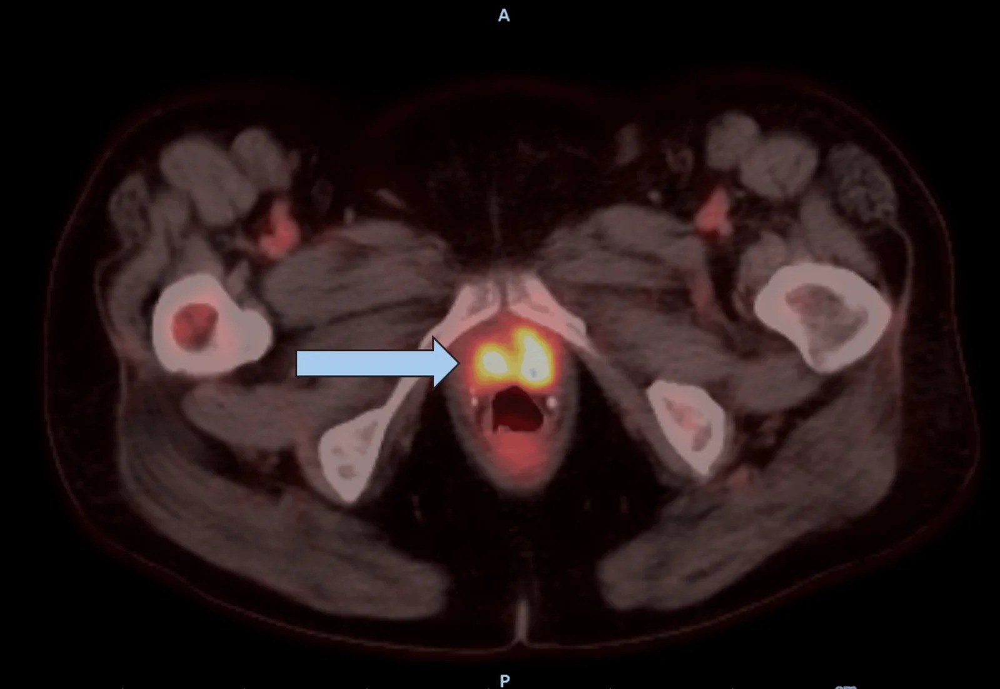

574 — Ung thư âm hộ & âm đạo: FIGO 2021 + hạch bẹn–đùi & SLN
Tags: pattern:u-am-ho pattern:u-am-dao pattern:hach-ben-di-can vung:am-ho vung:am-dao score:FIGO-2021 protocol:MRI-chau protocol:PET-CT protocol:SLN
Mức chắc chắn (certainty): tổng hợp y văn (literature synthesis) — gom FIGO Cancer Report 2025, review MRI âm hộ (Abdom Radiol 2026), review PET (Cancers 2026) và các ca open-access; chưa gắn một ca nguyên văn duy nhất.
Bài toán CĐHA của vùng này khác hẳn tử cung/buồng trứng: u nằm ngoài da – niêm mạc, có thể chỉ là "vết loét nhỏ", nhưng hạch bẹn–đùi quyết định giai đoạn và sống còn. Điểm chốt: phân biệt u ác âm hộ với âm vật bình thường (giả tái phát), với nang/áp-xe Bartholin, và đừng để PET âm tính ru ngủ — PET bỏ sót hạch micrometastasis.
1. Tổng quan bệnh học – cơ chế hình ảnh
- Dịch tễ: ung thư âm hộ chiếm ~4% ung thư phụ khoa, phần lớn ở phụ nữ sau mãn kinh; ung thư biểu mô vảy (squamous cell carcinoma, SCC) ~90%, melanoma ~5%, còn lại sarcoma, bệnh Paget âm hộ, adenocarcinoma tuyến Bartholin (Golden et al. 2026; Olawaiye et al., FIGO Cancer Report 2025). Triệu chứng hay gặp: ngứa, đau, khối hoặc vết loét; mọi tổn thương âm hộ nghi ngờ đều phải sinh thiết để loại xâm lấn.
- Đường lan (quyết định cách đọc hạch):
- Lan trực tiếp → âm đạo, niệu đạo, hậu môn (tùy vị trí).
- Theo bạch mạch → hạch bẹn nông là nơi gặp đầu tiên, rồi bẹn sâu và chậu ngoài (external iliac). Tổn thương bên (lateral) thường lan cùng bên (ipsilateral); tổn thương đường giữa (midline) lan một hoặc cả hai bên do mạng nối bạch mạch dày đặc; hạch chậu được coi là di căn (không còn là hạch vùng) (Golden et al. 2026).
- Đây là lý do vì sao "hạch bẹn bên nào?" là câu hỏi hình ảnh bắt buộc: nó quyết định nạo bẹn một bên hay hai bên.
- TẠI SAO thấy trên từng chuỗi xung (vật lý + mô bệnh):
- SCC âm hộ: tế bào đặc, ít nước ngoài tế bào → T2W tín hiệu trung gian (intermediate), ngấm thuốc biến thiên, và khuếch tán hạn chế (restricted diffusion) trên DWI/ADC (mật độ tế bào cao cản trở chuyển động nước) — minh họa Fig. 13.
- Melanoma âm hộ/âm đạo: sắc tố melanin có tín hiệu T1 cao tự nhiên (giống melanoma ở nơi khác) — đây là "bẫy" vì mặc định ai cũng nghĩ u âm đạo T1 thấp; Fig. 15 cho thấy tín hiệu T1 nội tại trong u (Golden et al. 2026).
- Sau xạ trị: xơ hóa do phóng xạ T2 tối, ngấm thuốc MUỘN; u còn sống/tái phát T2 trung gian, ngấm sớm trên DCE → phân biệt sẹo xạ với tái phát là câu hỏi lâm sàng hay gặp nhất.
- Hạch: di căn làm mất mỡ rốn hạch, tăng kích thước, bờ không đều, hoại tử, ngấm mạnh/khuếch tán hạn chế; nhưng kích thước hạch trên hình ảnh không thay được mô bệnh (xem mục 4).
- Ngưỡng định lượng nổi bật (để nhớ):
- FIGO 2021 — hạch quyết định giai đoạn: giai đoạn III của ung thư âm hộ chia theo kích thước di căn hạch trên mô bệnh: IIIA = hạch ≤ 5 mm; IIIB = hạch > 5 mm; IIIC = có xâm lấn vỏ hạch (extracapsular spread, ECS) (Golden et al.; Olawaiye et al.).
- Sinh thiết hạch gác (sentinel lymph node biopsy, SLNB): chỉ định khi u đơn ổ, khu trú âm hộ, < 4 cm, xâm lấn mô đệm > 1 mm, hạch bẹn âm trên lâm sàng và hình ảnh (GROINSS-V). Trong 403 bệnh nhân GROINSS-V: tái phát bẹn 2,3% (theo dõi trung vị 35 tháng), sống đặc hiệu bệnh 97% sau 3 năm (Olawaiye et al. 2025).
- Ngưỡng xử trí hạch gác: di căn ≤ 2 mm (micrometastasis) → xạ trị bẹn là thay thế an toàn cho nạo hạch; > 2 mm (macrometastasis) → nạo hạch bẹn–đùi (số liệu từ cập nhật GROINSS-V trong Olawaiye et al.).
- PET/CT toàn thân: Se 80%, Sp 90%, PPV 80%, NPV 90%; PET/MRI giai đoạn hạch Se 66,7% / Sp 97,2%, phối hợp với SLN nâng Se lên 77,8%; CT bụng–chậu toàn thân Se 43–60%, Sp 75–96% (Gazawi et al. 2026). Điểm mấu chốt: PET có độ phân giải ~4–7 mm nên bỏ sót micrometastasis; trong GOG-173, đánh giá miễn dịch (IHC) trên hạch gác phát hiện di căn ở 23% ca vốn "âm" trên H&E thường quy.
2. Mẫu hình + chẩn đoán phân biệt theo vị trí (gamut)
- Theo giải phẫu (Golden et al. 2026): âm vật/quy đầu âm vật, môi lớn, môi bé, tiền đình, lỗ niệu đạo, tuyến Bartholin (tiền đình lớn) và tuyến Skene (cạnh niệu đạo), âm đạo.
- Âm hộ — gamut khối/loét:
- SCC (hay nhất, ~90%): loét, T2 trung gian, khuếch tán hạn chế, ngấm thuốc.
- Melanoma: sắc tố, T1 cao tự nhiên, có thể đen trên ảnh; tiên lượng xấu hơn SCC.
- Adenocarcinoma tuyến Bartholin: khối ở vị trí tuyến Bartholin, ở người > 40 tuổi; khác hẳn nang Bartholin lành.
- Bệnh Paget âm hộ: mảng chàm/đỏ, có thể ung thư nội biểu mô.
- Sarcoma và u trung mô (angiomyxoma hung hãn, angiomyofibroblastoma): T2 sáng, ngấm mạnh.
- Lành: nang Bartholin/áp-xe, nang Skene, nang ống Gartner (âm đạo), xơ cứng lichen (lichen sclerosus), viêm nang lông, u mạch.
- Bình thường dễ nhầm: âm vật và trụ/đáy âm vật — T2 trung gian/tối, ngấm thuốc, có thể trông "như khối" → bị đọc nhầm tái phát (Fig. 6).
- Âm đạo — gamut khối:
- SCC âm đạo (chủ yếu, ~80%), melanoma, adenocarcinoma (khó), di căn từ cổ tử cung/âm hộ/nội mạc vào âm đạo (thực tế di căn vào âm đạo gặp hơn u nguyên phát) — luôn tìm ổ nguyên phát khác.
- Lành: nang Gartner, nang ống Wolff, sa tạng, u xơ.
- Vùng hạch bẹn — gamut hạch to:
- Di căn (SCC/âm hộ, melanoma, u chi dưới), viêm/mô phản ứng (nhiễm trùng bàn chân – móng), lymphoma, hạch sau tiêm/vaccine, hạch hoạt động do bệnh hệ thống.
- Đừng quên hạch điển hình của chuỗi bẹn–đùi (inguinofemoral) gồm hạch bẹn nông, bẹn sâu và hạch đùi (Cloquet) — nạo hạch phải lấy cả hai tầng.
3. Bảng so sánh phân biệt (ma trận đối chiếu)
| Thực thể (entity) | Hình ảnh điển hình (theo chuỗi xung) | Chốt vào (rule-in) | Chốt loại (rule-out) | Gợi ý xác nhận |
|---|---|---|---|---|
| SCC âm hộ | Loét/khối ở môi – tiền đình; T2 trung gian, DWI hạn chế, ngấm thuốc; có thể xâm lấn âm đạo/niệu đạo/hậu môn | Khối/loét T2 trung gian + DWI hạn chế ở phụ nữ lớn tuổi + kèm hạch bẹn | Tổn thương T2 rất sáng, không hạn chế khuếch tán, có vỏ rõ, không ngấm → nghĩ nang lành | Sinh thiết (punch/incisional); MRI để đánh giá xâm lấn + hạch |
| Melanoma âm hộ/âm đạo | Khối có sắc tố; T1W tự nhiên tăng tín hiệu (melanin), T2 hỗn hợp, ngấm mạnh | Tín hiệu T1 cao tự nhiên trong u âm hộ/âm đạo + tăng ngấm | U T1 thấp đồng nhất, không sắc tố → nghĩ SCC/biểu mô | Sinh thiết + hóa mô miễn dịch (S100, HMB-45, Melan-A); không xếp giai đoạn theo FIGO âm hộ |
| Adenocarcinoma tuyến Bartholin | Khối vùng Bartholin (sau–bên lỗ âm đạo), ngấm thuốc, có phần đặc; có thể dính da | Khối đặc ở vị trí tuyến Bartholin, người > 40 tuổi, lớn nhanh/đau | Nang đơn thuần, thành mỏng, dịch đồng nhất, không phần đặc → nang Bartholin lành | Sinh thiết; nếu "áp-xe" tái phát nhiều lần ở người lớn → nghi u |
| Âm vật – trụ âm vật bình thường | T2 trung gian/tối, ngấm thuốc, nằm giữa, đối xứng; có "dải tối" quy chiếu | Kích thước/hình dạng không đổi so với phim cũ (≥ vài tháng–năm), không hạn chế khuếch tán rõ | To lên theo thời gian, bờ không đều, hạn chế khuếch tán mạnh → nghĩ tái phát/u | So sánh với phim cũ + khám lâm sàng; đừng sinh thiết âm vật "bình thường" |
| Sẹo xạ trị (fibrosis) | Vùng T2 tối, ngấm thuốc muộn, bờ mờ | T2 tối + ngấm MUỘN trên DCE + không hạn chế khuếch tán | T2 trung gian + ngấm SỚM + hạn chế khuếch tán → nghĩ tái phát | DCE + DWI; theo dõi/sinh thiết nếu còn nghi ngờ |
| Hạch bẹn di căn | Hạch to, mất mỡ rốn, bờ không đều, ngấm mạnh, hoại tử; PET dương | Hạch bẹn ngấm mạnh/hoại tử + DWI hạn chế + ổ nguyên phát âm hộ | Hạch nhỏ < 5–10 mm, giữ mỡ rốn, ngấm nhẹ, có phản ứng quanh → chưa kết luận | MRI cả vùng bẹn–chậu + PET/CT; chọc hút kim nhỏ (FNA) nếu nghi; SLNB nếu hạch âm trên hình ảnh |
| Hạch bẹn – "PET âm giả" | PET/CT có thể ÂM dù hạch đã di căn micrometastasis (Fig. 3) | Ổ nguyên phát lớn/hoại tử + hạch bẹn nghi trên MRI nhưng PET âm → vẫn phải mô bệnh | PET dương thì hoàn toàn có thể dương giả do viêm | SLNB + ultrastaging (IHC) là chuẩn; PET không thay được SLN |
| SCC âm đạo | Khối thành âm đạo, T2 trung gian, DWI hạn chế, ngấm thuốc; đánh giá niệu đạo/trực tràng/bàng quang | Khối âm đạo + lan ra mô cạnh âm đạo/pelvic wall + hạch | Niêm mạc âm đạo lành, tổn thương nội mạc tử cung/cổ tử cung → tìm ổ nguyên phát khác | MRI chậu + PET/CT; loại trừ u cổ tử cung/âm hộ di căn vào âm đạo bằng sinh thiết |

Trái: SCC âm hộ — khối T2 trung gian (a), hạn chế khuếch tán (b,c), ngấm thuốc (d) (Golden et al., Abdom Radiol 2026, PMC13013239, CC BY 4.0). Phải: âm vật bình thường ở bệnh nhân có tiền sử ung thư âm hộ, từng bị nghi tái phát — đối chiếu phim cũ 7 năm xác nhận không đổi (cùng nguồn). Ảnh ghép letterbox giữ tỷ lệ.4. Protocol chụp + hệ phân độ/điểm chuẩn hóa
- MRI chậu là phương thức được chọn cho u nguyên phát âm hộ/âm đạo. Protocol theo ESUR (Golden et al. 2026):
- T2W có xóa mỡ (fat-sat): giúp tách u khỏi mỡ tầng sinh môn; DWI/ADC (b = 50 và 800); DCE (T1 sau tiêm động học).
- Trường nhỏ (small FOV) axial từ vòm âm đạo đến môi lớn, độ phân giải cao cho u/niệu đạo; trường lớn (large FOV) chậu để tìm hạch và di căn xương.
- Gel âm đạo giúp thấy u nhỏ; nhiều nơi dùng thuốc giảm nhu động để giảm artifact trực tràng; bệnh nhân nhịn ăn vài giờ.
- Với ổ tiền sử tiêm/điều trị, luôn lấy T1W trước tiêm (phát hiện melanin/máu) trước khi tiêm.
- Phân giai đoạn FIGO 2021 (ung thư âm hộ, theo Golden et al. và Olawaiye et al.):
| Giai đoạn | Định nghĩa |
|---|---|
| I | U khu trú ở âm hộ |
| IA | Xâm lấn mô đệm ≤ 1 mm và kích thước ≤ 2 cm |
| IB | Xâm lấn > 1 mm và/hoặc kích thước > 2 cm |
| II | U mọi kích thước lan 1/3 dưới niệu đạo, âm đạo hoặc hậu môn, hạch âm |
| III | U mọi kích thước lan tới 1/3 trên niệu đạo/âm đạo, niêm mạc bàng quang/trực tràng, và/hoặc có hạch vùng |
| IIIA | Hạch di căn ≤ 5 mm (hoặc lan 1/3 trên) |
| IIIB | Hạch di căn > 5 mm |
| IIIC | Hạch có xâm lấn vỏ (ECS) |
| IVA | U cố định vào xương, hoặc hạch cố định/loét |
| IVB | Di căn xa |
- Điểm cần nhấn: kích thước hạch trong FIGO IIIA/IIIB là kích thước di căn trên mô bệnh học, không phải kích thước hạch trên CT/MRI → hình ảnh không thể "chốt" IIIA vs IIIB, chỉ giúp định hướng và chọn đường mổ/xạ.
- FIGO âm đạo (ung thư âm đạo): I = khu trú thành âm đạo; II = lan vào mô cạnh âm đạo nhưng chưa tới thành chậu; III = tới thành chậu hoặc có hạch; IVA = niêm mạc bàng quang/trực tràng, ra ngoài khung chậu thật; IVB = di căn xa. FIGO 2021 chỉ áp dụng cho carcinoma (SCC/adeno), KHÔNG áp cho melanoma (melanoma dùng hệ giai đoạn melanoma của nó).
- Hạch: quy trình chọn lựa (không thể bỏ qua mô bệnh):
flowchart TD
A[Khối hoặc loét âm hộ - âm đạo] --> B[Sinh thiết xác nhận SCC hoặc adeno hoặc melanoma]
B --> C[MRI chậu T2FS + DWI + DCE - FOV nhỏ vùng u và FOV lớn tìm hạch]
C --> D{Hạch bẹn nghi trên MRI hoặc lâm sàng?}
D -->|Không - u đơn ổ dưới 4 cm - xâm lấn trên 1 mm| E[SLNB với Tc-99m + xanh methylene + ICG - giữa đường giữa thì hai bên]
D -->|Có nghi hoặc không đủ điều kiện SLN| F[PET-CT + FNA hạch - nạo hạch bẹn-đùi nếu xác nhận]
E --> G{Mô bệnh hạch gác?}
G -->|Âm| H[Theo dõi bẹn cùng bên - tái phát bẹn khoảng 2,3 phần trăm]
G -->|Micrometastasis dưới hoặc bằng 2 mm| I[Xạ trị bẹn là thay thế an toàn cho nạo hạch]
G -->|Macrometastasis trên 2 mm hoặc ECS| J[Nạo hạch bẹn-đùi plus xạ trị bổ trợ]
F --> K[U lan rộng niệu đạo hậu môn bàng quang - hóa-xạ trị đồng thời - cân nhắc phẫu thuật]
- Kỹ thuật lấy hạch gác: technetium-99m phóng xạ + thuốc nhuộm xanh (từ GROINSS-V/GOG); ICG + huỳnh quang hồng ngoại gần là lựa chọn mới hơn; vị trí u cách đường giữa < 2 cm hoặc vượt đường giữa → đánh giá hai bên; u bên, < 4 cm, cách đường giữa ≥ 2 cm, hạch cùng bên âm → chỉ cùng bên (Olawaiye et al.). Tỉ lệ phát hiện hạch gác cao, nhưng kỹ thuật chỉ an toàn khi phẫu thuật viên + giải phẫu bệnh tuân thủ protocol và siêu phân giai đoạn (ultrastaging) bằng cắt chuỗi mỏng + IHC.
- Theo dõi sau điều trị: MRI/DCE để phân biệt sẹo xạ (T2 tối, ngấm muộn) với tái phát (T2 trung gian, ngấm sớm, DWI hạn chế); PET/CT khi nghi tái phát/di căn; theo dõi lâu dài vì ung thư âm hộ hay tái phát tại chỗ và tại bẹn.
5. Biến thể bình thường và cạm bẫy
- Cạm bẫy số 1 — âm vật bình thường giả tái phát (minh họa Fig. 6): bệnh nhân có tiền sử ung thư âm hộ, khối T2 trung gian/tối ngấm thuốc ở đường giữa → ban đầu tưởng tái phát, nhưng đối chiếu phim cũ 7 năm thấy kích thước/hình dạng không đổi và khám lâm sàng bình thường → không phải tái phát. Quy tắc: u đường giữa vùng âm vật luôn đối chiếu phim cũ trước khi gọi tái phát.
- Nang/áp-xe Bartholin ở người > 40 tuổi có thể che adenocarcinoma tuyến Bartholin; nếu "áp-xe" tái phát nhiều lần hoặc có phần đặc/thành dày → phải sinh thiết, đừng đặt Word catheter rồi bỏ qua.
- Melanoma có thể T1 cao tự nhiên — đừng loại trừ vì "u T1 sáng là mỡ/máu"; melanoma âm hộ không dùng FIGO âm hộ; SLNB ở melanoma âm hộ có tỉ lệ âm giả tới 15% và chưa là chuẩn ngoài thử nghiệm (Olawaiye et al.).
- PET âm không loại trừ hạch: PET bỏ sót micrometastasis (độ phân giải ~4–7 mm; Fig. 3 cho thấy ca PET âm nhưng hạch đã di căn). Hạch gác + ultrastaging IHC vẫn là chuẩn cho hạch bẹn ở SCC âm hộ giai đoạn sớm.
- Hạch chậu = di căn xa: đừng gọi "hạch vùng"; điều này đổi giai đoạn và phác đồ.
- Âm đạo: "u nguyên phát" luôn phải loại trừ di căn từ cổ tử cung, âm hộ, nội mạc tử cung (bệnh sử cắt tử cung vì cổ tử cung là bối cảnh rất hay gặp); sinh thiết + hóa mô miễn dịch trước khi chốt.
- Bỏ sót trên mặt cắt (cross-sectional pitfalls): khối âm hộ có thể bị cắt mất nếu FOV nhỏ không phủ tới môi lớn — luôn đặt FOV đủ thấp (đến môi lớn) và đủ rộng cho hạch; gel âm đạo giúp thấy u nhỏ; đừng nhầm nếp gấp da, mô mỡ tiền đình, cơ hành hang (bulbospongiosus) với tổn thương; đừng nhầm nang tuyến Skene (cạnh niệu đạo) với túi thừa niệu đạo (thường đánh giá tốt hơn bằng FOV nhỏ + T2FS).
6. Tự lượng giá — Blind Quiz
Ca 1 — Khối âm hộ loét ở người lớn tuổi

- Gợi ý lâm sàng: nữ 64 tuổi, tổn thương âm hộ loét, trợt, nhìn thấy trên khám.
- Câu hỏi: Mô tả tín hiệu trên T2W, DWI/ADC và sau tiêm. Bốn dấu hiệu này cùng dẫn tới chẩn đoán gì? Vì sao "T2 trung gian + DWI hạn chế" quan trọng hơn kích thước?
Bấm để hiện đáp án (findings + chẩn đoán)
- Dấu hiệu: (a) khối âm hộ đường giữa T2 trung gian; (b,c) hạn chế khuếch tán trên DWI/ADC; (d) ngấm thuốc sau tiêm.
- Chẩn đoán: ung thư biểu mô vảy (SCC) âm hộ — sinh thiết xác nhận. Cơ chế: tế bào đặc → T2 trung gian + cản trở khuếch tán nước → ADC thấp.
- Nguồn ảnh: Golden E et al., Abdom Radiol (NY) 2026, Fig. 13 (PMC13013239), CC BY 4.0.
Ca 2 — U âm hộ + khối bẹn cùng bên

- Gợi ý lâm sàng: nữ 51 tuổi, có khối ở âm hộ và khối ở bẹn trái.
- Câu hỏi: Panel nào cho thấy khối nguyên phát, panel nào cho hạch? Dấu hiệu nào nói hạch đã di căn chứ không phải viêm? Điều này đặt bệnh nhân vào giai đoạn nào (theo FIGO 2021)?
Bấm để hiện đáp án (findings + chẩn đoán)
- Dấu hiệu: (a,b) khối âm hộ T2 tối, ngấm thuốc đều, có thành phần nang trung tâm, hạn chế khuếch tán (c,d); (e) hạch bẹn trái to, hoại tử, bờ không đều (adenopathy hoại tử).
- Chẩn đoán: u âm hộ (ngấm, hạn chế khuếch tán) kèm hạch bẹn hoại tử → di căn hạch vùng. Theo FIGO 2021, có hạch = giai đoạn III trở lên; phân IIIA/IIIB/IIIC phụ thuộc kích thước di căn và ECS trên mô bệnh (không dựa vào kích thước trên MRI).
- Nguồn ảnh: Golden E et al., Abdom Radiol (NY) 2026, Fig. 14 (PMC13013239), CC BY 4.0.
Ca 3 — "Khối" ở âm vật hay tái phát?

- Gợi ý lâm sàng: nữ 48 tuổi, tiền sử ung thư âm hộ đang theo dõi; MRI thấy "khối" đường giữa âm hộ ngấm thuốc.
- Câu hỏi: Bạn nghĩ tái phát hay không? Cần làm gì trước khi kết luận? Panel nào giúp chốt?
Bấm để hiện đáp án (findings + chẩn đoán)
- Dấu hiệu: (a,b) tổn thương đường giữa T2 trung gian/tối; (c) ngấm thuốc trên T1 sau tiêm; (d) so sánh phim cũ 7 năm: kích thước/hình dạng không đổi.
- Chẩn đoán: âm vật bình thường, KHÔNG tái phát. Cơ chế: âm vật có mô cương (erectile) ngấm thuốc và T2 trung gian, dễ giả khối; chốt bằng đối chiếu phim cũ + khám lâm sàng, không sinh thiết mù.
- Nguồn ảnh: Golden E et al., Abdom Radiol (NY) 2026, Fig. 6 (PMC13013239), CC BY 4.0.
Ca 4 — U âm đạo có tín hiệu "lạ"

- Gợi ý lâm sàng: nữ 64 tuổi, u ở tiền đình âm đạo lan quanh niệu đạo.
- Câu hỏi: Tín hiệu trên T1W trước tiêm có gì đặc biệt? Chẩn đoán nào hay có tín hiệu T1 cao tự nhiên? Vì sao không dùng FIGO âm hộ cho u này?
Bấm để hiện đáp án (findings + chẩn đoán)
- Dấu hiệu: (a,b) khối T2 trung gian ở tiền đình âm đạo, bao quanh niệu đạo; (c) tín hiệu T1 cao nội tại (melanin) trên T1FS trước tiêm; (d) ngấm/thay đổi sau điều trị.
- Chẩn đoán: melanoma âm đạo/âm hộ. Melanin gây T1 cao tự nhiên; melanoma không xếp giai đoạn theo FIGO carcinoma âm hộ; SLNB ở melanoma âm hộ có âm giả ~15%, chưa là chuẩn.
- Nguồn ảnh: Golden E et al., Abdom Radiol (NY) 2026, Fig. 15 (PMC13013239), CC BY 4.0.
Ca 5 — PET âm có an tâm không?

- Gợi ý lâm sàng: bệnh nhân ung thư âm hộ, hạch bẹn nghi trên MRI; PET/CT được làm để phân giai đoạn.
- Câu hỏi: Bên phải (PET/CT) có thấy hạch bẹn không? Nếu PET âm, có được kết luận hạch âm không? Vì sao?
Bấm để hiện đáp án (findings + chẩn đoán)
- Dấu hiệu: trái = MRI khối âm hộ + hạch bẹn trái hoại tử; phải = PET/CT (panel A hàng trên) không thấy ngấm bệnh lý ở hai bẹn — hình âm giả; mô bệnh sau đó xác nhận di căn một phần hạch bẹn trái.
- Chẩn đoán/lý giải: PET/CT bỏ sót micrometastasis (độ phân giải ~4–7 mm) → PET âm không loại trừ hạch; chuẩn cho hạch bẹn giai đoạn sớm là SLNB + siêu phân giai đoạn IHC (GOG-173: IHC phát hiện thêm 23% ca "âm" trên H&E).
- Nguồn ảnh: Gazawi R et al., Cancers (Basel) 2026, Fig. 3 (PMC13406750) + Golden E et al., Abdom Radiol (NY) 2026, Fig. 14 (PMC13013239), CC BY 4.0.
Ca 6 — Ung thư âm đạo: đích xạ trị nhìn thấy ở đâu?

- Gợi ý lâm sàng: nữ 64 tuổi, tiền sử cắt tử cung, ngứa/bỏng/rỉ máu âm hộ 2 năm, được chẩn đoán SCC âm đạo giai đoạn III (T2 N1 M0).
- Câu hỏi: PET trước điều trị dùng để làm gì trong bệnh cảnh này? Vì sao phải loại trừ ổ nguyên phát cổ tử cung/âm hộ trước khi gọi "SCC âm đạo nguyên phát"?
Bấm để hiện đáp án (findings + chẩn đoán)
- Dấu hiệu: PET/CT trước điều trị cho thấy khối tăng chuyển hóa (gross tumor volume, GTV) ở vùng âm đạo/cạnh bàng quang; dùng để vẽ thể tích đích xạ trị.
- Chẩn đoán/ý nghĩa: SCC âm đạo nguyên phát — u âm đạo hiếm nên bước đầu phải loại trừ di căn từ cổ tử cung (bệnh nhân đã cắt tử cung vì vậy không còn cổ tử cung) và từ âm hộ. Điều trị chuẩn: hóa–xạ trị đồng thời + brachytherapy; 5 năm sống theo giai đoạn trong nghiên cứu toàn quốc Nhật (n = 746): I 87,6% · II 55,6% · III 59,9% · IV 15,3%.
- Nguồn ảnh: Singh J & Eanelli T, Cureus 2026, Fig. 1 (PMC13653533), CC BY 4.0.
Bài liên quan chéo
- 500 – Tổng quan Vú & Sản Phụ khoa
- 525 – K nội mạc/cổ tử cung FIGO MRI
- 528 – Dị dạng tử cung bẩm sinh ESHRE/ESGE
- 529 – Cổ tử cung & âm đạo bẩm sinh: dị dạng tắc nghẽn
- 535 – Ung thư buồng trứng, phúc mạc & u Krukenberg
- 572 – Hạch trong ung thư phụ khoa: SLN, hạch chậu–cạnh ĐMC & PET-CT
- 517 – Sinh thiết định vị vú & quản lý clip/kẹp
Ảnh
- Nguồn + giấy phép từng ảnh:
images/CREDITS.md. Ảnh CC BY 4.0 giữ nguyên bản; ảnh ghép letterbox không crop/kéo giãn. Ảnh CC BY-NC-ND (nếu dùng) giữ nguyên bản và không ghép.
Không dùng để chẩn đoán độc lập khi chưa có người hướng dẫn.